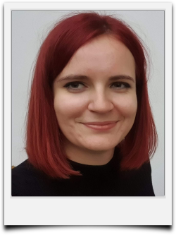

I am a motivated researcher in optical Remote Sensing finishing my PhD in Geoinformatics at Palacky University Olomouc in
Czechia, looking to transition into a commercial geospatial role. I have been actively developing scripts for QGIS, ArcGIS
to enhance my geospatial data processing, analysis and visualization.
I am passionate about applying open-source solutions to practical geospatial problems, particularly in environmental monitoring and spatial data analysis.
Looking for a job in back-end.
- Education
-
Doctor of Philosophy (PhD.) 2021 - current
- Palacky University, Olomouc, CZ
- Geoinformatics, Remote Sensing
- Thesis: Remote sensing approach for modelling evapotranspiration function
-
Erasmus+08/2020 - 12/2020
- Tartu University, EST
- Geoinformatics, Remote Sensing, Python programming
-
Master's degree (Mgr.)2019 - 2021
- Palacky University, Olomouc, CZ
- Geoinformatics, Remote Sensing
- Thesis: Quantification of evapotranspiration and cooling function of vegetation by remote sensing in Olomouc
-
Bachelor's degree (Bc.)2016 - 2019
- Palacky University, Olomouc, CZ
- Geoinformatics, Cartography
- Thesis: Unmanned aircraft thermal remote sensing in hydrology
- Internships
-
Universidad de Valéncia 09/2023 - 10/2023
A two month-long internship oriented at scripting functionality of evapotranspiration models, networking
and establishing cooperation.
-
Bonn University 10/2022
A month-long internship at Bonn University in Germany. Focused on networking and gaining new information
and experience regarding topic of dissertation thesis.
-
Global Change Research Institute CAS02/2019
A month-long internship at Czech Global Change Institute. Basic supervised classification, cartography vitualizations and Python programming
- Work Experience
-
OpenGeoLabs s.r.o.01/2023 - current
- Consulting open geospatial applications
- Participation in small-scale custom contracts
- Realization of workshops for general public and companies (mainly QGIS, GDAL, Python)
- Promoting ideas of Free and Open Source GIS
-
Envipartner, s.r.o., Brno, CZ03/2021 - 10/2021
- Custom PyQGIS sciprting
- Creation of custom PyQGIS scripts
- Providing QGIS support for field workders
-
Urban Planner s.r.o., Olomouc, CZE2019
- Data editing, data control according to land use plans
-
Edutainer2017 - 2021
- Fort of Science, Interactive Science Center of Palacký University, Olomouc, CZE
- Lector of educational programms
- Personal Projects
-
- Conferences and seminars
-
- Copernicus User Forum 2024
- Prague, CZE
- Presenting results of various approaches to indication of cooling capacity of vegetation.
-
- Recreation and nature conservation - hand in hand
- Brno, CZE
- Presenting results of analysis of Surface Temperature characteristics in a local city.
-
Copernicus User Forum 20222022
- Prague, CZE
- Presenting a prototype of an open-source project for calculating Bowen Index
-
11th Advanced Training Course on Land Remote Sensing2022
- Köszeg, HU
- Presenting a poster of an open-source project for calculating Bowen Index
- Organized by ESA and iASK Köszeg
-
IALE20222022
- Warshaw, PO
- Presenting a paper on the Quantification of evapotranspiration and cooling function of vegetation using
remote sensing
- Language skills
-
- Czech, Native Speaker
- English, C1
- Spanish, A2
- Publications
-
-
Pohanková, T. & Pechanec, V. (2025). Estimating Bowen ratio in local environment based on satellite imagery.
Open Geosciences, 17(1), 20250774. https://doi.org/10.1515/geo-2025-0774
-
Pohanková, T., & Pechanec, V. (2024). Assessing the Cooling Potential of Vegetation
in a Central European Rural Landscape: A Local Study. Land, 13(10), 1685
-
Pohankova, T., Vyvlečka, P., & Pechanec, V. (2024). How to measure evapotranspiration in
landscape-ecological studies? Overview of concepts and methods.
Journal of Landscape Ecology, 17(3).
-
Pohanková T. & Pechanec V. (2024). Quantifying the cooling function of urban vegetation based on image data analysis.
Public Recreation and Landscape Protection, Brno, Czechia.
https://doi.org/10.11118/978-80-7509-963-1-0244
-
Renzi, J. P., Garayalde, A. F., Brus, J., Pohankova, T., Smýkal, P., & Cantamutto, M. A. (2023).
Environmental and agronomic determinants of hairy vetch (Vicia villosa Roth)
seed yield in rainfed temperate agroecosystems. European Journal of Agronomy, 147, 126822.
-
Konicek, J., Netek, R., Burian, T., Novakova, T., & Kaplan, J. (2020). Non-spatial data towards
spatially located news about COVID-19: A semi-automated aggregator
of pandemic data from (social) media within the Olomouc Region, Czechia. Data, 5(3), 76.
- Collaborative Projects
-
-
Biocultural Diversity - Linking Cultural and Natural Heritage in the Urban Historic Environment
-
Prediction and management of mosquito calamities for biodiversity conservation in floodplain
forests
-
Development of methodology for monitoring and evaluation of hydromorphological
characteristics of watercourses
-
Importance and protection of valley floodplains as an environment for the eco-stabilisation
function of the landscape
-
Modelling of spatiotemporal variability of selected bioclimatic factors of the landscape using
open data in GIS Doctoral Student Grant Competition (DSGC)
- Honours and awards
-
- Rector's Prizes for the Best Bachelor's and Master's Theses and Sports Achievements 2021 2nd Place in Master's category
- GISáček 2021 1st place in Master's category
- GISáček 2019 1st place in Bachelor's category